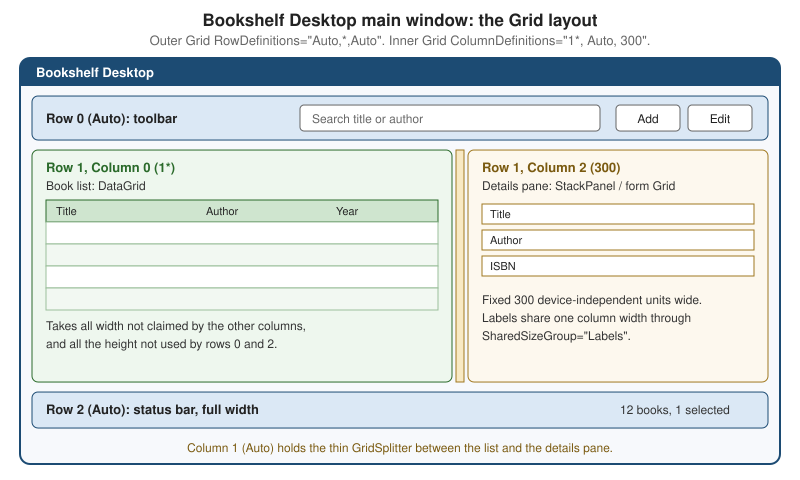
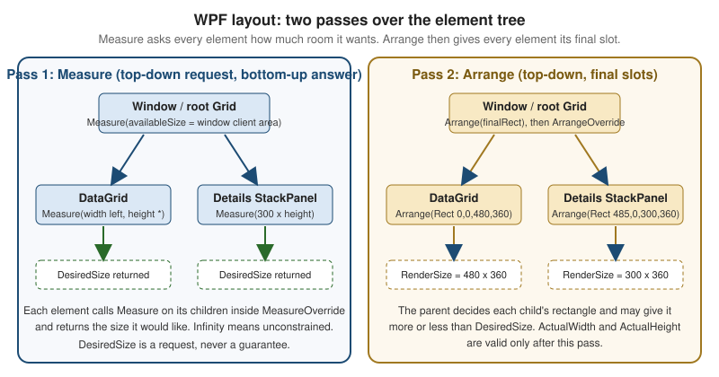

Layout & Panels
|
This content was generated with the assistance of AI and should be verified against the official documentation before being relied on in production. |
Layout is the process that decides how big every element of a window is and where it goes. In WPF nobody places controls with pixel coordinates by default; instead each element asks its parent for room, the parent decides, and the whole tree is resolved by a deterministic algorithm that reacts to window resizing, DPI changes, localized text that is longer than expected and content that appears or disappears at run time. Understanding that algorithm is the difference between a layout that "just works" and one that is fought with trial and error. This page was written against .NET 10 LTS (latest patch 10.0.13) with C# 14, Visual Studio 2026 18.11.1, Windows App SDK 2.5.1 and CommunityToolkit.Mvvm 8.4.2 on Windows 10 and Windows 11. .NET 11 is at release candidate 2 (11.0.0-rc.2) and general availability is expected at .NET Conf, 10 to 13 November 2026; the .NET 11 WPF release notes list bug fixes only at the time of writing, so nothing on this page changes for it. WPF is the stack in focus; WinUI 3 and Windows Forms are compared in a table further down.
The running scenario is Bookshelf Desktop. This page builds its main window, a toolbar on top, a book list and a
details pane in the middle with a splitter between them, and a status bar at the bottom, then a details form whose labels
line up, a tag strip, a cover badge, and a custom ShelfPanel that draws a bookshelf of covers. The BooksViewModel,
BookViewModel and IBookRepository that feed the window are the ones used across the section; this page only needs
their shape. Controls and the content model are covered on the Controls & the Content Model page, lists with
virtualization on Lists, Grids & Trees, and the XAML syntax used here on the page XAML Language Fundamentals.

The layout model
WPF uses a layout system based on a slot model. Every FrameworkElement is treated as a rectangle that is slotted
into a space its parent gives it. The size of that slot is computed from the available screen space, the element’s size
constraints, its margin and padding, and the individual behavior of the parent Panel. An element does not have to fill
its slot (the LayoutInformation.GetLayoutSlot method returns the slot, which is frequently larger than the visible
content).
Layout is recursive and runs in two passes over the tree, always on the UI thread:
-
Measure. The parent calls
Measure(availableSize)on each child. The child reports back how much room it would like, itsDesiredSize. Because a child may itself be a panel, this recurses down to the leaves, and the answers flow back up. -
Arrange. The parent now knows what every child wants, so it calls
Arrange(finalRect)on each child with the rectangle (the slot) the child will actually get. The child positions its own children inside it and, at the end, itsRenderSizeis known.

Neither pass is called by application code in normal use; the layout system queues them when something invalidates the tree and runs them before the next render. The members involved are:
| Member | Role |
|---|---|
|
Public entry point called by the parent. Evaluates |
|
What a panel or control overrides. It must call |
|
Read-only result of the measure pass, remembered for the arrange pass. |
|
Public entry point called by the parent with the slot rectangle. |
|
Overridden to call |
|
Results of the arrange pass. Valid only after layout has run; they can change more than once while the layout system settles. |
|
Mark layout dirty, or force a synchronous pass. |
|
Notifications that a pass finished or that an element’s size changed. Handlers that change layout can cause a loop. |
|
The slot rectangle the parent allocated to a child, useful when debugging. |
Three consequences of the model are the source of most layout questions:
-
The parent is in charge. A child’s
Width="500"is a request; a parent can give less (the child is clipped) or more (the child is aligned inside the slot). ACanvasgives a child exactly what it asks for, aStackPaneloffers unlimited room along its orientation, aGridoffers the cell. -
availableSizecan be infinite. AStackPanelmeasures children with an infinite size along its orientation, and aScrollViewerwith an infinite size in each scrollable direction. A child that stretches to the available size (for example aTextBoxwithStretchalignment) then reports its natural size, and aGridthat offers star rows or columns an infinite size treats them asAuto. This is the reason "my control won’t fill the window" and "my list stopped being virtualized" almost always trace to an infinite constraint somewhere above. -
Layout work depends on what changes. Dependency properties whose change invalidates layout are registered with
FrameworkPropertyMetadataOptions.AffectsMeasure,AffectsArrange,AffectsParentMeasureorAffectsParentArrange. ChangingWidth,Margin,Visibilityor the text of aTextBlocktriggers measure and arrange; changing a brush does not. Properties registered by your own controls need the same flags.
When layout runs repeatedly for the same invalidation (an element changes its own size inside SizeChanged or
LayoutUpdated, which changes its size again), WPF detects the loop and throws an InvalidOperationException whose
message reports a layout cycle. The fix is to remove the dependency of the size on itself rather than to catch the exception.
Source: Layout
Inspecting the passes from code
The following helper reads the result of the two passes. It is useful in tests and diagnostics, not in production layout code: measure an element off-screen to learn its natural size, then ask for the slot the parent gave it.
using System.Windows;
using System.Windows.Controls.Primitives;
namespace Bookshelf.Desktop.Diagnostics;
internal static class LayoutProbe
{
/// <summary>
/// Returns the size an element wants when nothing constrains it.
/// </summary>
public static Size NaturalSize(UIElement element)
{
element.Measure(new Size(double.PositiveInfinity, double.PositiveInfinity));
return element.DesiredSize;
}
/// <summary>
/// Describes the slot the parent gave a child and what the child did with it.
/// </summary>
public static string Describe(FrameworkElement element)
{
Rect slot = LayoutInformation.GetLayoutSlot(element);
return $"{element.GetType().Name}: slot {slot}, "
+ $"desired {element.DesiredSize}, render {element.RenderSize}, "
+ $"actual {element.ActualWidth:0.##} x {element.ActualHeight:0.##}";
}
}Source: Layout
Sizing, margins, padding and alignment
Before a panel’s own logic runs, FrameworkElement applies its sizing properties around MeasureOverride and
ArrangeOverride. These are the properties that every element in every panel shares.
| Property | Default | Meaning |
|---|---|---|
|
|
An explicit size request in device-independent units (1/96 inch). |
|
|
Lower bound. Applied even when the parent offers less, so the element can overflow and be clipped. |
|
|
Upper bound that also limits |
|
read-only |
The size after layout. Not available in the constructor or before the first layout, and subject to several changes
while the layout settles. Use |
|
|
|
|
|
|
|
|
How the element uses the slot when the slot is larger than the element: |
|
|
On |
|
|
Inherited. |
|
|
|
|
none |
A layout transform is applied before measure, so the parent reserves room for the transformed element. A render transform is applied after arrange and never re-triggers layout. |
|
|
Thickness values in XAML accept one number (all sides), two numbers (horizontal, vertical) or four numbers in the
order left, top, right, bottom: Margin="8", Margin="8,4", Margin="8,4,8,0".
Panels at a glance
A panel is an element derived from System.Windows.Controls.Panel whose job is to arrange its children. Panel
provides the Children collection (the content property, so child elements go directly between the tags), the
Background brush, the Panel.ZIndex attached property for stacking children that overlap and, for authors of custom
panels, InternalChildren, which is Children plus the items generated by data binding when the panel hosts the items
of an ItemsControl. Panels make heavy use of attached properties such as Grid.Row and DockPanel.Dock: the child
declares a value that its parent panel reads during layout.
| Panel | Arrangement | Typical use | Relative cost |
|---|---|---|---|
|
Rows and columns; children occupy cells and may span them; overlapping children are possible. |
Whole windows, forms, anything two-dimensional. |
Highest of the built-ins (more passes when |
|
One line, |
Short, non-scrolling groups of controls: toolbars, form sections. |
Low; not virtualized. |
|
Children dock to an edge in order; the last child fills the rest by default. |
Chrome: toolbar on top, status bar at the bottom, content in the middle. |
Low. |
|
Flows children left to right (or top to bottom) and breaks at the edge. |
Tag strips, thumbnail galleries, toolbars that wrap. |
Low to medium. |
|
Absolute coordinates from an edge; reports zero size to its parent. |
Overlays, drawing surfaces, adorners. |
Lowest. |
|
Equal-size cells in a rows by columns grid. |
Dashboards of identical tiles, keypads. |
Low. |
|
Like |
The default items host of |
Low, and it scales with the viewport, not with the item count. |
UniformGrid lives in System.Windows.Controls.Primitives; the others are in System.Windows.Controls. The official
panel overview names Canvas, DockPanel, Grid, StackPanel, VirtualizingStackPanel and WrapPanel as the
panels designed to build application UI; UniformGrid is a utility panel used inside controls and templates.
Source: Panel
Grid
Grid is the workhorse of WPF layout and the right root for almost every window. It divides its area into rows and
columns declared with RowDefinitions and ColumnDefinitions; a child chooses its cell with the attached properties
Grid.Row and Grid.Column (both default to 0) and may span several with Grid.RowSpan and Grid.ColumnSpan. Several
children can share a cell, in which case they overlap in document order (lower Panel.ZIndex first).
Sizing rows and columns
Each RowDefinition has a Height and each ColumnDefinition a Width, expressed as a GridLength. There are three kinds:
| Kind | XAML | Behavior |
|---|---|---|
Absolute |
|
Exactly that many device-independent units. |
Auto |
|
As much as the largest child in the row or column wants (its |
Star (proportional) |
|
A share of the space left after the absolute and |
Each definition also has MinWidth/MaxWidth (columns) or MinHeight/MaxHeight (rows), which bound the track
whatever its kind. A star track is clamped by those limits, and the space it cannot take goes to the other star tracks.
If a Grid has no definitions it behaves as a single cell. When the Grid is measured with an infinite size in a
direction (inside a ScrollViewer or a StackPanel), star tracks in that direction behave like Auto, because there is
no finite space to divide.
The .NET 10 string short form
Until .NET 9 every track needed an element, which made even simple grids verbose. .NET 10 (a community contribution,
documented in "What’s new in WPF for .NET 10") lets RowDefinitions and ColumnDefinitions be written as a
comma-separated string directly on the Grid:
<!-- .NET 9 and earlier, and still valid -->
<Grid>
<Grid.ColumnDefinitions>
<ColumnDefinition Width="1*"/>
<ColumnDefinition Width="Auto"/>
<ColumnDefinition Width="300"/>
</Grid.ColumnDefinitions>
</Grid>
<!-- .NET 10: the same grid -->
<Grid ColumnDefinitions="1*, Auto, 300"/>Source: What’s new in WPF for .NET 10
The short form carries only the size of each track. The documentation shows only absolute, Auto and star values in
it; tracks that need MinWidth, MaxWidth or SharedSizeGroup use the element form (which can be combined with the
short form on the other axis: rows in a string, columns as elements). The short form needs the .NET 10 WPF assemblies, so
a project that still targets .NET 8 or 9, or .NET Framework, cannot use it. The release notes present the two forms as equivalent.
The Bookshelf Desktop main window
The window is an outer Grid of three rows (toolbar, content, status bar) and an inner Grid of three columns (list,
splitter, details). The short form keeps each of them on one line. Rows use Auto for the chrome, which sizes to its
content, and * for the content, which takes whatever is left; columns give the details pane a fixed 300 units and
the list everything else.
<Window x:Class="Bookshelf.Desktop.MainWindow"
xmlns="http://schemas.microsoft.com/winfx/2006/xaml/presentation"
xmlns:x="http://schemas.microsoft.com/winfx/2006/xaml"
xmlns:d="http://schemas.microsoft.com/expression/blend/2008"
xmlns:mc="http://schemas.openxmlformats.org/markup-compatibility/2006"
xmlns:vm="clr-namespace:Bookshelf.Desktop.ViewModels"
mc:Ignorable="d"
d:DataContext="{d:DesignInstance Type=vm:BooksViewModel}"
Title="Bookshelf Desktop"
Width="900" Height="560"
MinWidth="640" MinHeight="400"
UseLayoutRounding="True">
<Grid RowDefinitions="Auto, *, Auto">
<!-- Row 0: toolbar. The last child of a DockPanel fills the remaining width. -->
<DockPanel Grid.Row="0" Margin="8">
<Button DockPanel.Dock="Right" Margin="8,0,0,0" Padding="12,4"
Content="Refresh" Command="{Binding LoadCommand}"/>
<TextBox Text="{Binding SearchText, UpdateSourceTrigger=PropertyChanged}"
VerticalContentAlignment="Center"/>
</DockPanel>
<!-- Row 1: list | splitter | details -->
<Grid Grid.Row="1" ColumnDefinitions="1*, Auto, 300" Margin="8,0,8,8">
<DataGrid Grid.Column="0"
ItemsSource="{Binding Books}"
SelectedItem="{Binding SelectedBook}"
AutoGenerateColumns="False" IsReadOnly="True">
<DataGrid.Columns>
<DataGridTextColumn Header="Title" Binding="{Binding Title}" Width="2*"/>
<DataGridTextColumn Header="Author" Binding="{Binding Author}" Width="*"/>
<DataGridTextColumn Header="Year" Binding="{Binding Year}" Width="Auto"/>
</DataGrid.Columns>
</DataGrid>
<GridSplitter Grid.Column="1" Width="6"
HorizontalAlignment="Center" VerticalAlignment="Stretch"
ResizeDirection="Columns" ResizeBehavior="PreviousAndNext"/>
<ScrollViewer Grid.Column="2" VerticalScrollBarVisibility="Auto"
HorizontalScrollBarVisibility="Disabled">
<ContentPresenter Content="{Binding SelectedBook}"/>
</ScrollViewer>
</Grid>
<!-- Row 2: status bar -->
<StatusBar Grid.Row="2">
<StatusBarItem>
<TextBlock Text="{Binding Books.Count, StringFormat={}{0} books}"/>
</StatusBarItem>
</StatusBar>
</Grid>
</Window>Source: Grid
The details pane displays the selected BookViewModel through a ContentPresenter; the implicit DataTemplate that
draws it is shown in the next section. The view model shape the window needs is small, so the listing below shows only
the members the layout binds to:
using System.Collections.ObjectModel;
using Bookshelf.Core;
using CommunityToolkit.Mvvm.ComponentModel;
using CommunityToolkit.Mvvm.Input;
namespace Bookshelf.Desktop.ViewModels;
public sealed partial class BooksViewModel : ObservableObject
{
private readonly IBookRepository _repository;
private readonly IDialogService _dialogs; // used by the add and delete commands, not shown here
public BooksViewModel(IBookRepository repository, IDialogService dialogs)
{
_repository = repository;
_dialogs = dialogs;
}
public ObservableCollection<BookViewModel> Books { get; } = [];
[ObservableProperty]
public partial BookViewModel? SelectedBook { get; set; }
[ObservableProperty]
public partial string? SearchText { get; set; }
[RelayCommand]
private async Task LoadAsync(CancellationToken cancellationToken)
{
IReadOnlyList<Book> books = await _repository.GetAllAsync(cancellationToken);
Books.Clear();
foreach (Book book in books)
{
Books.Add(new BookViewModel(book));
}
}
}Source: ObservableProperty attribute
The IBookRepository.GetAllAsync(CancellationToken) method and the BookViewModel(Book) constructor are the shapes
assumed by the running scenario in this section; they are not part of any library. The window receives the view model
by constructor injection and assigns it to DataContext (the Generic Host registration is shown on the application
model pages), so the layout stays free of code-behind.
Shared size groups: aligning labels
A details form needs its labels to line up. Putting the whole form in one Grid solves it, but the rows of a form are
often separate controls (a DataTemplate per field, or rows in an ItemsControl). Shared size groups let
separate grids agree on a track size: each participating ColumnDefinition or RowDefinition sets SharedSizeGroup to
the same name, and an ancestor sets the attached property Grid.IsSharedSizeScope="True" to define the scope in which the
name is resolved. The tracks in the group then all take the size of the largest one. Shared size groups are normally
used with Auto tracks; a fixed or star track would not need to be shared.
The implicit template below is the details pane of the main window. The label Publication year is longer than Title; with the shared group the label column is as wide as the longest label in every row, and the inputs start at the same x position in all rows (translated labels change the width, and the rows still agree).
<ResourceDictionary xmlns="http://schemas.microsoft.com/winfx/2006/xaml/presentation"
xmlns:x="http://schemas.microsoft.com/winfx/2006/xaml"
xmlns:vm="clr-namespace:Bookshelf.Desktop.ViewModels">
<DataTemplate DataType="{x:Type vm:BookViewModel}">
<StackPanel Margin="8" Grid.IsSharedSizeScope="True">
<Grid Margin="0,0,0,6">
<Grid.ColumnDefinitions>
<ColumnDefinition Width="Auto" SharedSizeGroup="Labels"/>
<ColumnDefinition Width="*" MinWidth="120"/>
</Grid.ColumnDefinitions>
<TextBlock Text="Title" VerticalAlignment="Center" Margin="0,0,8,0"/>
<TextBox Grid.Column="1" Text="{Binding Title}"/>
</Grid>
<Grid Margin="0,0,0,6">
<Grid.ColumnDefinitions>
<ColumnDefinition Width="Auto" SharedSizeGroup="Labels"/>
<ColumnDefinition Width="*" MinWidth="120"/>
</Grid.ColumnDefinitions>
<TextBlock Text="Author" VerticalAlignment="Center" Margin="0,0,8,0"/>
<TextBox Grid.Column="1" Text="{Binding Author}"/>
</Grid>
<Grid>
<Grid.ColumnDefinitions>
<ColumnDefinition Width="Auto" SharedSizeGroup="Labels"/>
<ColumnDefinition Width="*" MinWidth="120"/>
</Grid.ColumnDefinitions>
<TextBlock Text="Publication year" VerticalAlignment="Center" Margin="0,0,8,0"/>
<TextBox Grid.Column="1" Text="{Binding Year}"/>
</Grid>
</StackPanel>
</DataTemplate>
</ResourceDictionary>Source: Grid
Because each column here needs MinWidth and SharedSizeGroup, the element form is used; the short form would not
express them. Merge the dictionary into App.xaml as described on the Resources & Resource Dictionaries page.
GridSplitter and other Grid members
| Member | Notes |
|---|---|
|
A thumb the user drags to resize the tracks beside it. Place it in its own |
|
A child occupies several adjacent tracks. Keep spans over star tracks where possible, because a spanning child does not
need to widen any single |
|
Draws dashed lines at the cell edges. A debugging aid only; it paints in a fixed style and is not meant for shipping. |
|
Attached property, |
|
Attached property that overrides document order for overlapping children in the same cell. |
Source: Grid
StackPanel
StackPanel arranges children in a single line. Its Orientation is Vertical by default. Along the orientation it
measures children with an infinite size, so each child reports its natural extent and the stack grows as long as
needed; across the orientation, children with Stretch alignment fill the panel’s width (or height). A StackPanel never
scrolls: put a ScrollViewer outside it (see below) or the content is clipped when the window is too small.
WPF’s StackPanel has no Spacing property (WinUI 3’s does). Space is created with Margin on the children, or with an
implicit Style for the child type so that the value is written once:
<StackPanel Orientation="Horizontal" Margin="8">
<StackPanel.Resources>
<Style TargetType="Button">
<Setter Property="Margin" Value="0,0,8,0"/>
<Setter Property="Padding" Value="12,4"/>
</Style>
</StackPanel.Resources>
<Button Content="Add" Command="{Binding AddBookCommand}"/>
<Button Content="Edit" Command="{Binding EditBookCommand}"/>
<Button Content="Delete" Command="{Binding DeleteBookCommand}"/>
</StackPanel>Source: StackPanel
The three commands are generated by [RelayCommand] methods of the view model; they are shown here only for the layout.
StackPanel is the right panel for a few controls, and the wrong one for a list: it creates every child at once,
unlike VirtualizingStackPanel, which is what item controls use by default.
DockPanel
DockPanel docks each child to one edge of the space still left, in the order the children appear. The attached
property DockPanel.Dock takes Left, Top, Right or Bottom (the default is Left). LastChildFill is true
by default, so the last child ignores its Dock and fills what remains. Order is meaningful: a child docked to the top
first takes the full width, one docked to the left first takes the full height.
<DockPanel LastChildFill="True">
<StatusBar DockPanel.Dock="Bottom">
<StatusBarItem Content="Ready"/>
</StatusBar>
<ToolBar DockPanel.Dock="Top">
<Button Content="Open"/>
<Button Content="Save"/>
</ToolBar>
<ListBox DockPanel.Dock="Left" Width="180" ItemsSource="{Binding Shelves}"/>
<!-- The last child fills the remaining area -->
<ContentControl Content="{Binding SelectedShelf}"/>
</DockPanel>Source: DockPanel
Compared with a Grid, DockPanel is a good fit for window chrome (toolbar, status bar, side bar, content) and uses
less code, but it gives no control over proportions. The main window above uses a Grid because the middle row must
split by columns.
WrapPanel
WrapPanel places children one after another and starts a new line at the edge of the panel (the line direction depends
on Orientation: Horizontal by default, Vertical flows top to bottom). ItemWidth and ItemHeight force every
child into a uniform cell (the default NaN lets each child keep its own size). Each line’s height is that of its tallest
child. If the WrapPanel is measured with an infinite width (inside a StackPanel with Horizontal orientation or a
horizontally scrolling ScrollViewer), it never wraps. Typical uses are tag strips and thumbnail galleries:
<ItemsControl ItemsSource="{Binding SelectedBook.Genres}" Margin="0,8">
<ItemsControl.ItemsPanel>
<ItemsPanelTemplate>
<WrapPanel Orientation="Horizontal"/>
</ItemsPanelTemplate>
</ItemsControl.ItemsPanel>
<ItemsControl.ItemTemplate>
<DataTemplate>
<Border Margin="0,0,6,6" Padding="8,2" CornerRadius="10"
BorderThickness="1" BorderBrush="Gray">
<TextBlock Text="{Binding}"/>
</Border>
</DataTemplate>
</ItemsControl.ItemTemplate>
</ItemsControl>Source: Panel
The ItemsPanel property swaps the panel an ItemsControl uses to host its generated containers; the container list
and its virtualization are discussed on Lists, Grids & Trees. A WrapPanel in ItemsPanel is not virtualized, so it suits
tens of items, not thousands.
Canvas
Canvas positions children with the attached properties Canvas.Left, Canvas.Top, Canvas.Right and Canvas.Bottom
(a child with none of them set sits at the top-left corner; when both Left and Right are set, Left wins). It measures children with an unlimited size, so they get their natural size, and it reports a desired size of
zero to its parent; a Canvas with Width and Height unset therefore collapses to nothing unless its parent
stretches it. Children are not constrained, repositioned or clipped when the window resizes, and the Canvas is the
cheapest panel for layout. Use it for overlays and drawing surfaces, not for forms.
<Grid Width="96" Height="140">
<Image Source="{Binding CoverUri}" Stretch="UniformToFill"/>
<Canvas>
<Border Canvas.Right="4" Canvas.Top="4" Background="#CC1C4B73"
Padding="6,2" CornerRadius="3" Visibility="{Binding IsNew, Converter={StaticResource BoolToVisibility}}">
<TextBlock Text="NEW" FontSize="10" FontWeight="Bold" Foreground="White"/>
</Border>
</Canvas>
</Grid>Source: Canvas
The Canvas sits on top of the Image in the same Grid cell, so the badge floats over the cover; the Canvas
stretches to the cell (its parent gave it a slot), while its single child is positioned from the right edge. The
BoolToVisibility converter is a resource as on the Resources & Resource Dictionaries page.
UniformGrid
UniformGrid (in System.Windows.Controls.Primitives) divides its area into equal cells. Rows and Columns set the
dimensions; if both are 0 the panel makes a square-ish grid that fits the children, and if only one is set the other
is computed. FirstColumn leaves leading cells in the first row empty. Every cell has the same size, which makes it
suitable for a bar of equally sized buttons:
<UniformGrid Rows="1" Margin="8">
<Button Content="All"/>
<Button Content="Reading"/>
<Button Content="Finished"/>
<Button Content="Wishlist"/>
</UniformGrid>Source: Panel
Because all cells are equal, one long label can force every cell to be as wide. Where that is unacceptable, use a
Grid with star columns, which allows MinWidth.
ScrollViewer and Viewbox
Two decorators change the constraint their content is measured with rather than arranging children themselves.
ScrollViewer measures its content with an infinite size in each direction whose scroll bar is not Disabled and gives
it the viewport size in the others. HorizontalScrollBarVisibility and VerticalScrollBarVisibility take Disabled
(no scrolling, content is constrained to the viewport), Auto (the bar appears when needed), Hidden (scrolls without a
visible bar) or Visible. The defaults are Disabled horizontally and Visible vertically. CanContentScroll
chooses logical scrolling (by item, only when the content implements IScrollInfo, as virtualizing panels do) or physical
scrolling (by device-independent unit, the default for a ScrollViewer placed manually). The details pane above uses
HorizontalScrollBarVisibility="Disabled", so its text wraps to the 300-unit width instead of scrolling sideways.
Viewbox has exactly one child and scales it to fit. Stretch is Uniform by default (keep the aspect ratio), with None,
Fill (distort) and UniformToFill (fill and crop); StretchDirection is Both by default, and UpOnly or
DownOnly restrict it. It is useful for a fixed-design widget such as a chart or a splash image that must shrink with
the window, but scaling applies to text and strokes too, so it is not a replacement for responsive layout.
<ScrollViewer VerticalScrollBarVisibility="Auto" HorizontalScrollBarVisibility="Disabled">
<StackPanel Margin="8">
<Viewbox Height="120" Stretch="Uniform" StretchDirection="DownOnly">
<TextBlock Text="{Binding SelectedBook.Title}" FontSize="28" FontWeight="SemiBold"/>
</Viewbox>
<TextBlock Text="{Binding SelectedBook.Description}" TextWrapping="Wrap" Margin="0,8,0,0"/>
</StackPanel>
</ScrollViewer>Source: ScrollViewer
Wrapping text needs a finite width: TextWrapping="Wrap" in a vertically scrolling ScrollViewer works because
horizontal scrolling is Disabled; with Auto the text would be measured at infinite width and never wrap.
Layout rounding and device pixels
WPF positions in device-independent units, so at 125 % or 150 % scaling an element edge can fall between two physical pixels, and anti-aliasing then draws blurry one-pixel borders and uneven gaps between neighbouring elements. Two mechanisms address this, at different levels:
-
UseLayoutRounding="True"(an inheritedFrameworkElementproperty,falseby default) rounds element sizes and positions to whole device pixels during layout, so the numbers stored inActualWidth,RenderSizeand the layout slot are whole pixels at the current DPI. Set it once on theWindow, as the main window above does; it applies to the descendants. It is the better choice for new layouts, because the layout and the render agree. -
SnapsToDevicePixels="True"is a render-time hint onUIElement(inherited) asking the renderer to align the element’s drawing to pixel boundaries without changing layout.
Layout rounding can make the sum of rounded children differ by a pixel from the parent, so exact comparisons of sizes
should allow a tolerance. WinUI 3 rounds layout by default (UseLayoutRounding defaults to true there).
Source: Layout
Writing a custom Panel
When no built-in panel arranges children the way a design needs, derive from Panel and override MeasureOverride and
ArrangeOverride. The contract is small, but strict:
-
Measure every child.
MeasureOverridemust callMeasureon each child (even a child you will hide in the arrange pass), otherwise itsDesiredSizeis stale. TheSizepassed to a child is the constraint you want it to respect; an infinite dimension (double.PositiveInfinity) means "tell me your natural size". -
Return a finite desired size.
MeasureOverridereturns the size the panel needs. Do not returndouble.PositiveInfinity; whenavailableSizeis infinite, return the size the content actually takes. -
Arrange every child.
ArrangeOverridereceives the final size (slot) and must callArrangeon each child with the rectangle it should occupy. The return value is the size the panel used, normallyfinalSize. -
Use
InternalChildren, notChildren. When the panel is theItemsPanelof anItemsControl, the generated item containers are inInternalChildren;Childrenwould be empty or stale. -
Invalidate through metadata. A dependency property that changes the layout is registered with
FrameworkPropertyMetadataOptions.AffectsMeasure(orAffectsArrange) so WPF re-runs layout. A plain CLR property needs an explicitInvalidateMeasure().
The official how-to defines a deliberately trivial PlotPanel that puts one child at the fixed position (50, 50); it shows
the two overrides but not wrapping, infinite constraints or a bindable property. The ShelfPanel below is the
bookshelf of the scenario: it places children left to right, starts a new shelf when the row is full, and aligns the covers
of each shelf to its bottom edge, as books rest on a plank.
using System.Windows;
using System.Windows.Controls;
namespace Bookshelf.Desktop.Controls;
/// <summary>
/// Lays children out on shelves: left to right, wrapping when the width is used up,
/// with every child resting on the bottom edge of its shelf.
/// </summary>
public sealed class ShelfPanel : Panel
{
public static readonly DependencyProperty SpacingProperty =
DependencyProperty.Register(
nameof(Spacing),
typeof(double),
typeof(ShelfPanel),
new FrameworkPropertyMetadata(
8.0,
FrameworkPropertyMetadataOptions.AffectsMeasure),
IsValidSpacing);
/// <summary>Gap between neighbouring children and between shelves.</summary>
public double Spacing
{
get => (double)GetValue(SpacingProperty);
set => SetValue(SpacingProperty, value);
}
private static bool IsValidSpacing(object value) =>
value is double spacing && spacing >= 0 && double.IsFinite(spacing);
protected override Size MeasureOverride(Size availableSize)
{
// Ask every child for its natural size.
var unconstrained = new Size(double.PositiveInfinity, double.PositiveInfinity);
foreach (UIElement child in InternalChildren)
{
child.Measure(unconstrained);
}
List<Shelf> shelves = BuildShelves(availableSize.Width);
double width = 0;
double height = 0;
foreach (Shelf shelf in shelves)
{
width = Math.Max(width, shelf.Width);
height += shelf.Height;
}
if (shelves.Count > 1)
{
height += Spacing * (shelves.Count - 1);
}
return new Size(width, height);
}
protected override Size ArrangeOverride(Size finalSize)
{
double y = 0;
foreach (Shelf shelf in BuildShelves(finalSize.Width))
{
double x = 0;
for (int i = shelf.First; i < shelf.First + shelf.Count; i++)
{
UIElement child = InternalChildren[i];
Size size = child.DesiredSize;
// Bottom-align the child inside the height of its shelf.
child.Arrange(new Rect(x, y + (shelf.Height - size.Height), size.Width, size.Height));
x += size.Width + Spacing;
}
y += shelf.Height + Spacing;
}
return finalSize;
}
// Groups the children into shelves using their DesiredSize.
// Infinity as the available width puts everything on a single shelf.
private List<Shelf> BuildShelves(double maxWidth)
{
var shelves = new List<Shelf>();
int first = 0;
int count = 0;
double rowWidth = 0;
double rowHeight = 0;
for (int i = 0; i < InternalChildren.Count; i++)
{
Size size = InternalChildren[i].DesiredSize;
double needed = count == 0 ? size.Width : rowWidth + Spacing + size.Width;
if (count > 0 && needed > maxWidth)
{
shelves.Add(new Shelf(first, count, rowWidth, rowHeight));
first = i;
count = 1;
rowWidth = size.Width;
rowHeight = size.Height;
}
else
{
count++;
rowWidth = needed;
rowHeight = Math.Max(rowHeight, size.Height);
}
}
if (count > 0)
{
shelves.Add(new Shelf(first, count, rowWidth, rowHeight));
}
return shelves;
}
private readonly record struct Shelf(int First, int Count, double Width, double Height);
}The panel is used as the ItemsPanel of an ItemsControl (or ListBox) bound to the books. WPF creates the panel from
the ItemsPanelTemplate and marks it as the items host, which is why InternalChildren is the collection to use:
<ScrollViewer VerticalScrollBarVisibility="Auto" HorizontalScrollBarVisibility="Disabled">
<ItemsControl ItemsSource="{Binding Books}" Margin="8"
xmlns:controls="clr-namespace:Bookshelf.Desktop.Controls">
<ItemsControl.ItemsPanel>
<ItemsPanelTemplate>
<controls:ShelfPanel Spacing="12"/>
</ItemsPanelTemplate>
</ItemsControl.ItemsPanel>
<ItemsControl.ItemTemplate>
<DataTemplate>
<Border Width="96" Height="140" Background="#DBE8F5" BorderBrush="#1C4B73" BorderThickness="1">
<TextBlock Text="{Binding Title}" Margin="6" TextWrapping="Wrap"/>
</Border>
</DataTemplate>
</ItemsControl.ItemTemplate>
</ItemsControl>
</ScrollViewer>Source: Panel
Points to notice in ShelfPanel, each tied to the contract above:
-
The panel measures every child with an infinite size, because the covers have their own size; a panel that wants to constrain children would pass a smaller
Size. -
BuildShelvesreadsDesiredSizein both passes, so the grouping is computed in one place. It is run twice per layout, which is acceptable for hundreds of children; for more, cache the result between the passes in a field. -
With an infinite
availableSize.Width(the panel placed in a horizontally scrollingScrollViewer) the testneeded > maxWidthis never true, so everything goes on one shelf and the returned size is finite, as the contract demands. -
Spacingis registered withAffectsMeasure; changing it from a binding or a trigger re-runs layout without code. -
The panel does not virtualize. Thousands of books would create thousands of containers; for that case derive from
VirtualizingPanel(the abstract base class for panels that virtualize their children), which is a larger piece of work that this page does not cover.
WPF, WinUI 3 and Windows Forms
All three stacks use a parent-driven layout, but the vocabulary and defaults differ. Porting a WPF layout to WinUI 3 is
mostly mechanical for Grid, StackPanel and Canvas; panels that exist only in WPF need a replacement.
| Aspect | WPF (.NET 10) | WinUI 3 (Windows App SDK) | Windows Forms (.NET 10) |
|---|---|---|---|
Layout algorithm |
Measure and Arrange, |
The same two-pass model with the same override names. |
Layout engine driven by |
Root panel for a window |
|
|
|
Single-line panel |
|
|
|
Docking and wrapping |
|
Not in the box; available in the Windows Community Toolkit controls and via |
|
Absolute positioning |
|
|
|
Grid short form |
|
Row and column definition elements. |
|
Margin and padding |
|
The same, plus |
|
Responsive layout |
|
|
|
Layout rounding |
|
|
Integer pixel coordinates. |
Virtualizing list panel |
|
|
Virtual mode of |
The WinUI 3 and Windows Forms entries are summarised from those stacks' own documentation and are covered in depth on their pages; the WPF column is the subject of this one.
Source: Panel
What changed from .NET Framework to .NET 10
The layout engine is the same engine that shipped in .NET Framework 3.0: porting a WPF project to .NET does not change
Measure, Arrange, the built-in panels or their defaults, and layouts that rendered correctly keep their geometry
(apart from small differences in text rendering and the theme).
| Version | Change relevant to layout |
|---|---|
.NET Framework 3.0 to 4.8 |
The layout system, panels, |
.NET Core 3.0 to .NET 8 |
WPF open-sourced and ported; the same panels and APIs, with performance work across the framework. No new panels. |
.NET 9 |
The Fluent theme and |
.NET 10 |
|
.NET 11 (RC2) |
Release notes list bug fixes only; no layout API changes are documented at the time of writing. |
Source: What’s new in WPF for .NET 10
Layout performance
Layout is a recursive, intensive process: the cost grows with the number of children and with the complexity of the panels that own them, and each time a child changes size or position it can trigger a new pass. The official guidance and practical corollaries are:
| Guideline | Why |
|---|---|
Choose the simplest panel that does the job. |
A |
Do not nest panels deeper than the design needs. |
Every level adds a Measure and an Arrange per invalidation. Many single-child wrapper panels can be merged into one
|
Use |
A render transform does not invoke layout; a layout transform forces a recursive update. |
Do not animate |
Each animation tick re-runs layout for the subtree. Animate a |
Avoid unnecessary calls to |
It forces a synchronous recursive pass; usually the layout system calls it for you. |
Virtualize large item collections. |
A |
Prefer |
|
Keep size-changing handlers idempotent. |
A |
Batch changes. |
Changing many layout properties in one dispatcher operation costs one pass, not one per property. |
To inspect the result, use Live Visual Tree and Live Property Explorer in Visual Studio (see the Development Environment & Tooling page): selecting an element shows its margin, its size and its alignment properties, and the debugging toolbar in the running
window can display layout adorners for the selection. Grid.ShowGridLines is a quick check of track boundaries in a debug build.
Pitfalls
-
Fixed
WidthandHeighteverywhere. The layout then ignores the available space; text that grows after translation is clipped, and the window cannot resize. UseAuto, star tracks,MinWidthandStretch. -
Stretchthat does not stretch. An explicitWidthmakesStretchbehave likeCenter; aStackPanelgives unlimited room along its orientation; aMaxWidthcaps the stretch. Check the three before blaming the panel. -
A
Gridrow or column that will not shrink. AnAutotrack sizes to the largest child, including aTextBoxwith a long unwrapped text. Use a star track withMinWidth, orTextWrapping/TextTrimmingon text. -
Star tracks inside infinite space. In a
ScrollViewerorStackPanel, star tracks collapse to their content. TheGridneeds a finite size: nest it in a panel that supplies one, or setScrollBarVisibility.Disabledon that axis. -
Margins on the wrong element. A margin on a child of a
Canvasis relative to the position; a margin on aStackPanelchild adds to the spacing of its neighbours; there is noPaddingonStackPanelandGrid. -
Reading
ActualWidthtoo early. It is zero in the constructor and inLoadedhandlers that run before layout has finished; useSizeChanged, orDispatcher.InvokeAsyncatDispatcherPriority.Loadedor later. -
Hardcoding a Grid cell for a new child. A forgotten
Grid.Rowputs the child in row 0, on top of other children, without any warning. -
Dock order. In
DockPanela child declared later cannot take space away from an earlier one; reorder the children to get the intended result. -
Using
Hiddento hide. The hidden element still takes space and still participates in layout; useCollapsed. -
Overlapping
GridSplitterand content. A splitter in a star track without its ownAutotrack overlaps the neighbouring content and swallows its mouse input.
What Microsoft Learn does not provide
-
The layout documentation has not been rewritten for modern .NET: the Layout conceptual page describes the system in terms that are unchanged since .NET Framework, and no article covers
UseLayoutRoundingin detail beyond a section of that page. -
The string short form of
Gridis documented in the .NET 10 release notes with one example; there is no reference text that lists the exact syntax it accepts, nor how it interacts withMinWidth,MaxWidthorSharedSizeGroup. The statement on this page that those need the element form is the documented behavior of the properties, not a documented limitation of the string. -
The official custom-panel how-to shows
PlotPanel, which positions one child at fixed coordinates. There is no official example of a wrapping panel, of handling infinite constraints, or of a virtualizing panel;ShelfPanelabove is an illustration written for this page that uses only documented members. -
There is no official guidance on responsive WPF layout (breakpoints). WPF has no
AdaptiveTrigger; the approaches named in the table (SizeChanged, visual states, star tracks) are community practice. -
Layout performance numbers are not published. The guidance is qualitative and should be confirmed by profiling your own window.